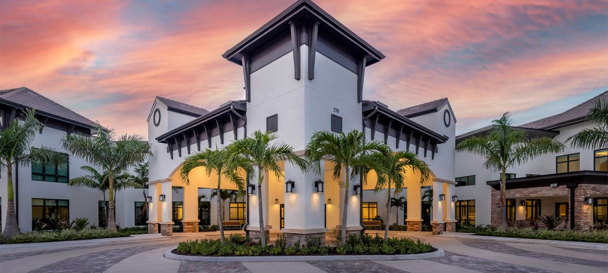

Approved
Subcontractor
Subcontractor
GC Partnership - Repeat Projects
ACG + Made In Rio.
ACG is a repeat glazing subcontractor for Made In Rio across senior-living communities and high-end Southwest Florida projects.